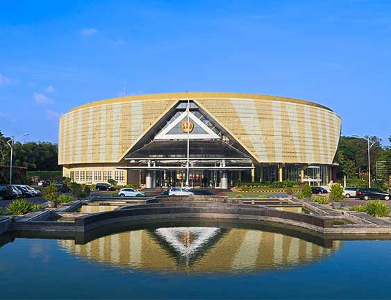
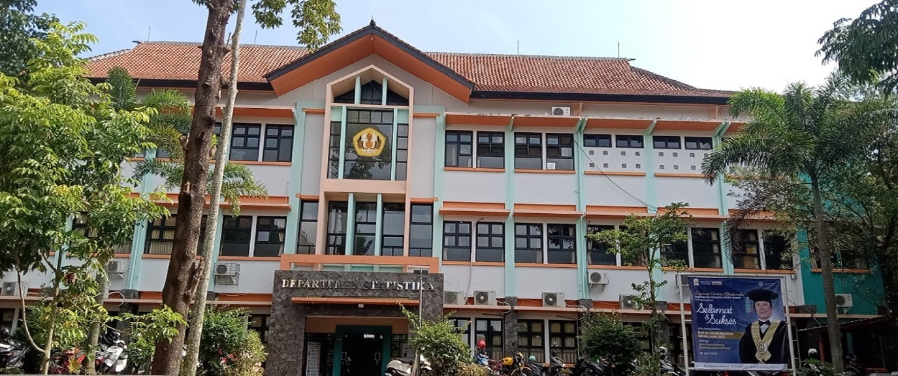
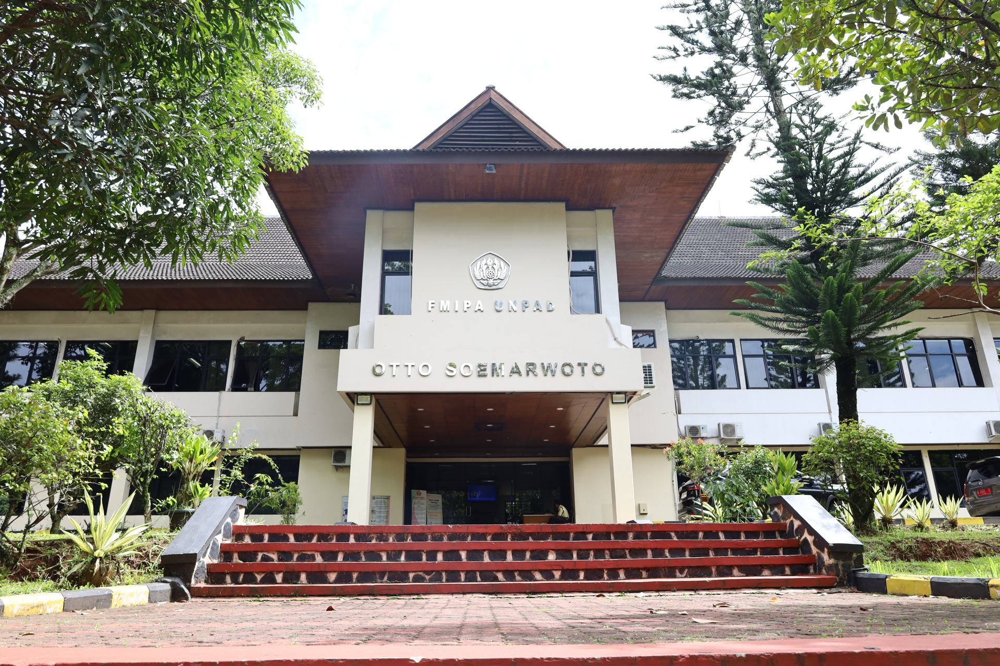

Rektorat Universitas Padjadjaran
Simbol tata kelola universitas dan arah strategis kelembagaan yang menaungi pengembangan Program Studi S2 Statistika Terapan.
Program Studi Magister Statistika Terapan FMIPA Universitas Padjadjaran tumbuh dari fondasi keilmuan yang kokoh, lalu berkembang menjadi program magister yang adaptif, relevan, dan berorientasi pada mutu melalui pembaruan kurikulum serta penguatan capaian pembelajaran lulusan.



Rumah akademik pengembangan keilmuan statistika dan penyelenggara program studi.

Lingkungan ilmiah yang menopang penguatan mutu, inovasi, dan kolaborasi.
Program Studi Magister Statistika Terapan FMIPA Universitas Padjadjaran dibuka berdasarkan SK Dikti Nomor 117/D/T/2007 tertanggal 18 Januari 2007 dan perpanjangan izin melalui SK Rektor Universitas Padjadjaran Nomor 6626/D/T/K-N/2011. Program studi ini dikelola oleh Departemen Statistika, Fakultas Matematika dan Ilmu Pengetahuan Alam, Universitas Padjadjaran.
Program ini didirikan untuk menghasilkan lulusan yang mampu menyelesaikan permasalahan statistik, khususnya dalam pengembangan metodologi pengolahan dan analisis data dengan pendekatan statistika terapan. Kurikulum dirancang untuk memperkuat penguasaan konsep, kemampuan pemecahan masalah, dan keterampilan praktis pada bidang statistika sosial, statistika bisnis dan industri, statistika aktuaria, biostatistika, dan sains data.
Seluruh kegiatan program studi diarahkan pada pencapaian visi, misi, tujuan, dan sasaran yang diturunkan dari arah pengembangan FMIPA Universitas Padjadjaran serta selaras dengan visi dan misi Universitas Padjadjaran.
Simbol tata kelola universitas dan arah strategis kelembagaan yang menaungi pengembangan Program Studi S2 Statistika Terapan.
Pusat aktivitas akademik, pengajaran, dan penguatan komunitas keilmuan statistika.
Ekosistem ilmiah multidisiplin yang mendukung kolaborasi, inovasi, dan pengembangan mutu.
Linimasa ini menggambarkan perkembangan kelembagaan, kurikulum, dan orientasi akademik Program Studi S2 Statistika Terapan FMIPA Unpad dari waktu ke waktu.
Program Studi Magister Statistika Terapan resmi dibuka berdasarkan SK Dikti Nomor 117/D/T/2007 tertanggal 18 Januari 2007 dan mulai menyelenggarakan pendidikan pada Februari 2007.
Kurikulum yang disusun pada tahun 2006 digunakan selama kurang lebih 15 tahun dan menjadi landasan awal penyelenggaraan pembelajaran hingga semester Genap 2021/2022.
Keberlanjutan penyelenggaraan diperkuat melalui perpanjangan izin berdasarkan SK Rektor Universitas Padjadjaran Nomor 6626/D/T/K-N/2011.
Pada Oktober hingga Desember 2022 dilakukan rekonstruksi kurikulum dengan dasar perubahan kode mata kuliah, rekomendasi asesor LAMSAMA, dan hasil tracer study.
Pembaruan kurikulum mulai diimplementasikan pada tahun ajaran 2023/2024 melalui benchmarking, telaah standar FORSTAT, kajian kebutuhan pengguna, FGD, dan tracer study.
Kurikulum OBE 2025 disusun sebagai bagian dari penyesuaian terhadap kebijakan penjaminan mutu pendidikan tinggi, termasuk Permendikbudristek Nomor 53 Tahun 2023.
Selaras dengan Permendikti Saintek Nomor 39 Tahun 2025 dan Peraturan Rektor Unpad Nomor 31 Tahun 2026, beban studi ditetapkan 42 SKS untuk memperkuat ketercapaian CPL dan daya saing lulusan.
Linimasa disusun berdasarkan naskah sejarah program studi dan informasi kurikulum yang diberikan.
Perjalanan program studi dibangun melalui dedikasi para ketua program studi yang mengawal fase perintisan, penguatan, hingga transformasi kurikulum dan tata kelola akademik.
*Periode kepemimpinan ditampilkan sesuai naskah sejarah yang disediakan untuk halaman ini.
Redesain kurikulum dilakukan secara berkala agar tetap relevan dengan kebijakan nasional, standar mutu pendidikan tinggi, kebutuhan pengguna lulusan, serta dinamika keilmuan statistika terapan.
Kurikulum awal menopang penyelenggaraan pendidikan sejak pembukaan program hingga tahun akademik 2021/2022 dan membangun fondasi penguasaan statistika terapan.
Fase fondasiPembaruan dilakukan berdasarkan rekomendasi asesor LAMSAMA, perubahan kode mata kuliah, tracer study, benchmarking, FGD, dan kajian kebutuhan pemangku kepentingan.
Fase transformasiPenyesuaian awal terhadap Permendikbudristek Nomor 53 Tahun 2023 menghasilkan Kurikulum OBE 2025 yang menekankan ketercapaian capaian pembelajaran lulusan.
Fase penguatan OBEPenyesuaian selanjutnya dilakukan berdasarkan Permendikti Saintek Nomor 39 Tahun 2025 dan Peraturan Rektor Universitas Padjadjaran Nomor 31 Tahun 2026, dengan tetap memperhatikan minimum 36 SKS, kebutuhan pengayaan mata kuliah, dan tuntutan akreditasi internasional.
Fase pengembangan berkelanjutanKurikulum Program Studi S2 Statistika Terapan saat ini disusun berbasis Outcome-Based Education (OBE) dan diarahkan agar lulusan memiliki kompetensi unggul dalam lima bidang kajian utama.
Analisis dan pemodelan data untuk mendukung kualitas, produktivitas, efisiensi, dan pengambilan keputusan bisnis maupun industri.
Pendekatan kuantitatif untuk mengkaji fenomena sosial dan mendukung kebijakan publik berbasis bukti.
Pemodelan ketidakpastian dan risiko untuk mendukung pengambilan keputusan pada sektor keuangan dan asuransi.
Penerapan metode statistika pada kesehatan, epidemiologi, dan penelitian biomedis.
Integrasi statistika, komputasi, dan analitik modern untuk mengekstraksi wawasan dari data yang kompleks.
Program Studi Magister Statistika Terapan memiliki peran strategis dalam menghasilkan lulusan yang kompeten di bidang statistika terapan, baik secara teoretis maupun aplikatif, serta mampu berkontribusi dalam pengembangan ilmu pengetahuan, teknologi, dan pemecahan permasalahan masyarakat.
Redesain kurikulum ini merupakan bentuk pertanggungjawaban akademik dan institusional kepada mahasiswa, dosen, alumni, pengguna lulusan, dunia industri, dan masyarakat.
Kurikulum diselaraskan dengan kebijakan nasional, standar mutu, dan kebutuhan pengembangan institusi.
Desain pembelajaran diarahkan untuk memastikan capaian pembelajaran lulusan dicapai secara komprehensif dan mendalam.
Pembaruan kurikulum mempertimbangkan tracer study, FGD, kebutuhan industri, serta instansi pengguna lulusan.
Penguatan pengalaman akademik dan kompetensi diarahkan untuk memperluas kontribusi lulusan pada tingkat yang lebih luas.
Sejarah Program Studi S2 Statistika Terapan FMIPA Universitas Padjadjaran adalah kisah tentang kesinambungan, pembaruan, dan komitmen pada keunggulan. Dari tahun 2007 hingga Kurikulum OBE 2026, setiap fase menunjukkan tekad untuk terus relevan, unggul, dan bermanfaat bagi masyarakat.
Kembali ke Awal ↑